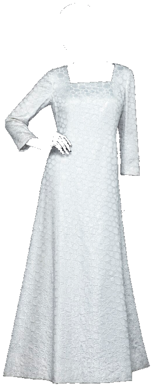
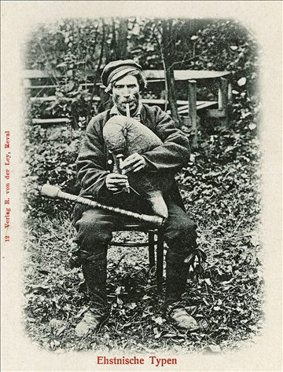
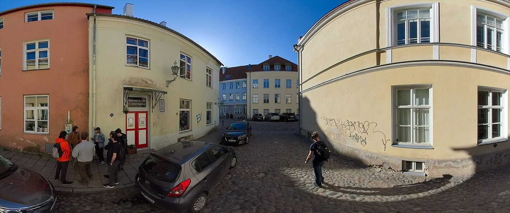
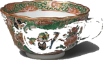
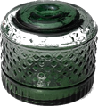
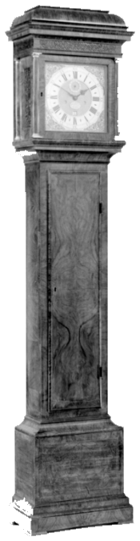
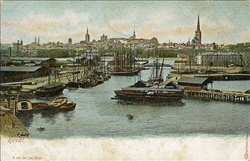
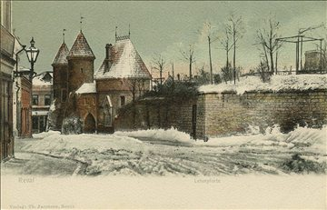
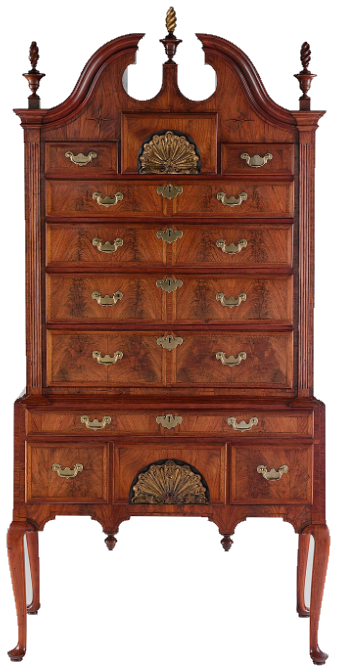
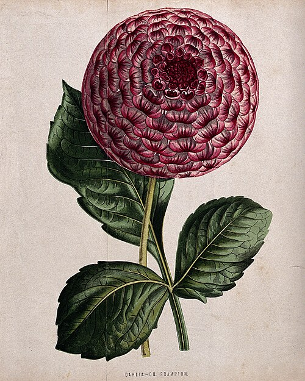

Kolm numbrit. Vihje: kell 03:33 või jääsinine tuli.


Klõpsa sahtlil — saad kõik fotod


Külalised


Siia kinnitatakse sinu leht.
vaskvõtmega
Kogu tuba on ühel pildil — vasakul aken ja laud, paremal kell, kapp ja riiulid. Tuba täidab ekraani kõrguse; laiuse poolest keri servanooltega, kahe sõrmega, rattaga või ← → nooleklahvidega.
Ilma hiireta: Tab viib järgmise nupu juurde, ruum ise on ka fookustatav — vajuta ruumile ja keri nooltega. Kõik nupud on puutesõbralikud.
Klõpsa asjadel: kell mõõdab aega ja on ka Pomodoro-taimer, grammofon mängib plaati või sinu voogu, taim tahab vett, kapp avab pusle, seif ootab koodi. Postkaarte saab seinal ringi tõsta — lohista hiirega või fokusseeri ja nihuta nooleklahvidega. Pruudikleit ripub riidepuul ühes tükis ja seda saab mööda tuba ringi tõsta (lohista või kasuta nooleklahve). Korktahvlil saab nii külaliselehti, postkaarte kui ajastu väljalõikeid vabalt ringi liigutada ja tahvlit suumida (−, +, ⟲). Nupp ⤢ avab tahvli suurel töölaual: seal saab joonistada (pliiats, pintsel, aerograaf, täitevärv, kujundid, tekst, templid, filtrid), kleepida paberist väljalõikeid, kustutada esemeid ×-iga ja laadida terve tahvli PNG-ina alla. ✍ viib külalisteraamatusse nime kirjutama.
Riistad ripuvad kapil. Vali riist ja klõpsa, mida see muudab. Aknast paistab päris tänav — lohista vaadet või kasuta nooleklahve.
Tiibklaver seisab paremas nurgas — klõpsa sellel või vajuta all Klaver. Seal saab mängida kahe oktavi klahvidel (hiirega, sõrmega või tähtedega A W S E D F T G Y H U J K), kuulata viit sissekirjutatud pala ja kirjutada oma noodirea. Noodid lähevad kohe noodijoonestikule ja kõlavad läbi sama kõlari.
Raadio. Kui plaat käib, ilmub alla 2000ndate raadiostiilis roheline ekraan; YouTube’i ja Spotify lingi saab kleebida grammofoni ⋯ paneeli.
Tiibklaver — mängi hiire või sõrmega, trüki tähti A W S E D F T G Y H U J K või vali noot allpool.
Viimane noot: — vajuta klahvi
Noodid — vali pala või kirjuta oma rida: noot + oktav, /2 = kaks lööki, . = poolteist, r = paus, | ignoreeritakse.
Külalisteraamat · 1926
Kirjuta nimi sulgedega
Tänud: Mallid — Eva-Liisa Aibast · Fotod — Jaak Aibast (85 pilti) · Kass — Wikimedia Commons (Bengal, CC BY 3.0) · Pruudikleit — Livrustkammaren / Erik Lernestål (avalik omand) · Kell ja sahtelkapp — The Metropolitan Museum of Art (CC0) · Riistad ja aknavaade — Pearson Scott Foresman (avalik omand), Tiffany Studios ja Félix Leblanc (CC0), Fuzheado (CC0).
Tapeet: „Japanese Passion Flower“ friis (u. 1880, avalik omand) · Puit: MHaensel73 / Wikimedia Commons (CC0) · Taimemotiivid: Wellcome Collection (CC BY 4.0) ja Susan Fereday (avalik omand) · Büst: Caracalla, Houston Museum (CC0) · Küünal ja tindipott: Wikimedia Commons (CC BY-SA) · Taim: iStockphoto/Chansom Pantip · Maalid: Museum Het Valkhof (CC BY-SA 4.0), Charlier Museum (avalik omand) · Sahtli ehted, nööbid ja võtmed: Wikimedia Commons (CC0/CC BY-SA) · Toa esemed (kell, sahtlikapp, teetass, tindipott): The Metropolitan Museum of Art (CC0) · Grammofon: Takkk / Wikimedia Commons (CC BY-SA 3.0) · Klaver: Steinway & Sons / Wikimedia Commons (CC BY-SA 3.0) · Postkaardid seinal: Wikimedia Commons (avalik omand, u. 1900) · Korktahvli väljalõiked: Charlie Chaplin (Witzel), Mary Pickford, Harry Houdini (LaPine), Wallace Reid, Edward M. Favor ja Fred C. Palmeri portree, „New Victor Records“ kuulutus 1909, „The Great Arrow“ kuulutus 1908 ja Fiati autokuulutus — Wikimedia Commons (avalik omand); Excelsiori jalgrattaplakat 1900 ja Curtis’s Botanical Magazine’i roos — Wikimedia Commons (avalik omand); „Lavine“ kassiillustratsioon — rawpixel (CC0) · GSAP + Draggable: gsap.com (lokaalne koopia) · Ilm: Open-Meteo (CC BY 4.0)Lohista pilte ringi ja klõpsa, et näha failiteed.
Siin sahtlis · paber ja pliiats
Kolm sammu ja mall on su käes
- Vali riiulilt köide ja klõpsa sellel.
- Pööra lehti — teisel lehel on terve ekraan.
- Laadi ZIP ja kopeeri kaust Raspberry Pi peale.
Käsi: klõpsa esemel. Riistad muudavad, mida saab teha.
Laadi kõik ↓